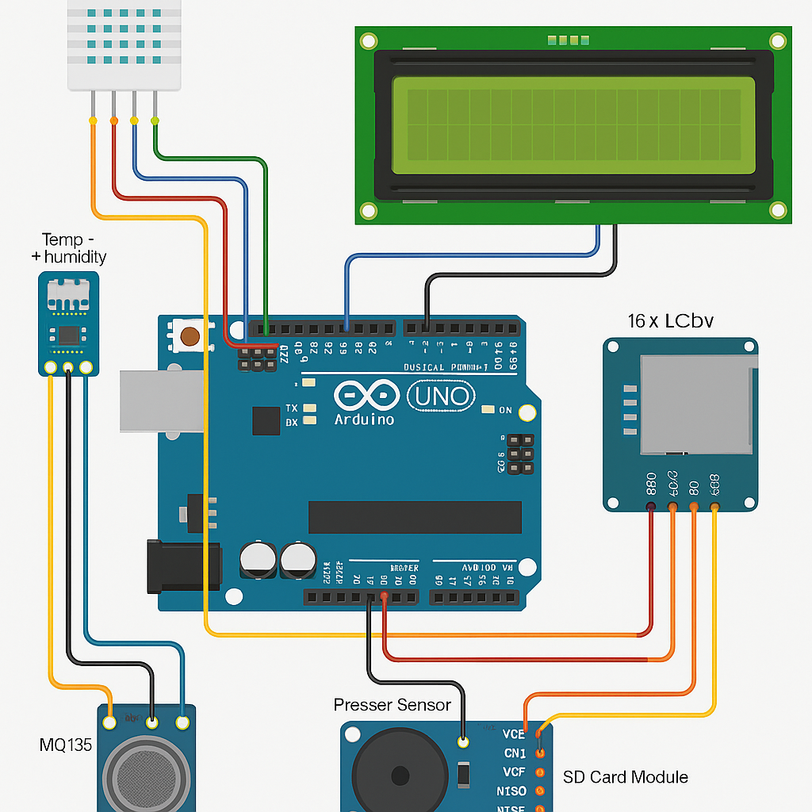

Neden yaptım?
Sıcaklık, nem ve basınç gibi değerleri aynı ekranda görmek istedim. Bunun için birkaç sensörü Arduino’ya bağlayıp LCD ekranda gösteren bir devre hazırladım.
Nasıl çalışıyor?
Arduino Uno, DHT22, BMP280 ve MQ135 sensörlerini okuyor. Gelen değerleri LCD ekrana yazdırıyorum. Devrede SD kart modülü de var ama veri kaydını henüz denemedim.
Adım adım
Sensörlerden sıcaklık, nem, basınç ve hava kalitesi bilgisi alınır.
Okunan değerler yazılımda anlamlı bir formata dönüştürülür.
Anlık ölçümler LCD ekran üzerinden kullanıcıya sunulur.
SD karta veri yazma ve kayıtları geri okuma işlemleri henüz doğrulanmadı.
Şu anki durum
Sensör verilerini LCD ekranda gösteriyorum. SD kartın kayıt yapıp yapmadığını kontrol etmedim. Ölçümlerin doğruluğunu da ayrıca karşılaştırmam gerekiyor.
Projede yaptıklarım
- DHT22 ile sıcaklık ve nem verisinin okunması
- BMP280 ile basınç bilgisinin sisteme dahil edilmesi
- MQ135 ile hava kalitesi ölçümü için temel okuma altyapısı
- LCD ekran üzerinden anlık veri gösterimi
- SD kart ile veri kaydı: doğrulama testi bekliyor
Neler öğrendim?
Birden fazla sensörü aynı Arduino’ya bağlamayı ve verilerini ekranda göstermeyi öğrendim. Okunan değerlerin doğru olup olmadığını kontrol etme ve sensör kalibrasyonu kısmında daha fazla çalışmam gerekiyor.
Görseller

Notlarım
Önce SD kart kaydını deneyeceğim. Sonrasında verileri bilgisayara aktarıp grafiklerini incelemek istiyorum.
Sırada ne var?
- Daha kararlı MQ135 kalibrasyonu
- Verileri web üzerinden görüntüleme
- Grafiksel veri analizi
- Kablosuz veri aktarımı